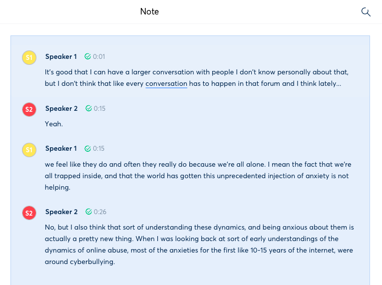

Blog
Automatic transcription software to transcribe like a pro
Tags: transcription, text, audio

Chances are that if you are working on a linguistics project, you might have to transcribe audio recordings in order to analyze them. Transcribing can be a deadly boring process, especially if you have many files or if you are dealing with speakers of non-standard dialects/varieties.
However, recent advancements in automatic speech recognition (ASR) have led to the development of very cool software that can help you speed up the transcription process. In this post, I review some of the ones I have found helpful throughout my experience.
Otter.ai
The first software I recommend is Otter.ai, which you can use to either record and transcribe live conversations or upload your audio files to have them automatically transcribed. Otter.ai offers various plans, with the most basic one being free.
The free plan allows you to transcribe up to 600 minutes a month, as long as your audio files are not longer than 40 minutes. If you want to transcribe more than that, you would have to choose one of their paid plans. The cheapest is only about $9/month, so it's not bad if you are not working on a very large project.
Once you create an account using your email, you can start using it. The software itself is pretty straightforward: you either record or upload something, the software processes it (this won't take longer than 5-10 minutes), and you edit it. This last step is important because automatic transcription software is rarely 100% accurate. Instead, accuracy is usually around 80-90%, depending on the quality of the audio. This means that you would have to listen to the full audio recording while reading the automatic transcription to make all necessary corrections. In any case, starting with this automatic transcription will save you a lot of time, and the editor is also very easy to use.

From my experience, Otter.ai is one of the most accurate software I have tried, which is an important factor to consider. However, it usually has problems when it comes to identifying speakers in a conversation. Therefore, in many cases you will end up labeling speakers manually (though this is a simple process).
Happyscribe
Happyscribe is another popular automatic transcription software. To use it, you have to pay $0.20 per minute transcribed, though the company claims their transcriptions have an accuracy of 85%. Additionally, if you are a student, you get a 25% discount. This means that you would pay around $9-12 per hour transcribed.
Once you upload your audio file and it's processed, you will see a nice editor to go over the transcription and make changes. The good thing about Happyscribe is that you can invite people to join your transcription file and make edits together, just like you would do on a Google doc, for example. Moreover, you can download the final transcription in multiple formats. It even supports MAXQDA, the famous software for qualitative data analysis!
REV
REV is quite similar to Happyscribe, as they both offer similar accuracy rates and similar prices. In the case of REV, you would pay $0.25 per minute. Just like Happyscribe too, you can collaborate with other people and download your transcription file in multiple formats. The good thing about REV is that you can transcribe the first 45 minutes of any file for free, something that Happyscribe doesn't currently offer.

Conclusion
Overall, automatic transcription software is of great help when you need to transcribe several files for your projects, although you will probably have to spend some money on it. The reason for this is that even though this software seems pretty simple, the reality is that the technology behind ASR is extremely complex. In fact, after more than 20 years of development, people still haven't found a system that produces 100% accuracy.
If you found this post interesting, you can check out my other blog posts here!